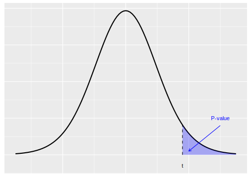

3 Single sample inferences
In a few situations, we can derive the sampling distribution for the statistic of interest and use this as the basis for constructing confidence intervals and hypothesis tests. Presently we estimate population means \mu in Section 3.1, population proportions p in Section 3.2, and population variances \sigma^2 in Section 3.3 in some special cases.
3.1 Estimating means
If the parameter of interest is the population mean \theta = \mu, then what can be said about the distribution of the sample mean estimator \widehat{\theta} = \overline{X} in Equation 2.1? We will consider three cases,
- normal population with known \sigma^2,
- any population with unknown \sigma^2, when the sample size m is large, and
- normal population with unknown \sigma^2, when the sample size m is small.
In each, the form of the confidence interval and hypothesis test statistic for \mu can be derived using the approximate normality of the sample mean.
In general, the confidence intervals for the mean based on normality theory will have the form: \text{point estimate}\; \mu \pm (\text{critical value}) \cdot (\text{precision of point estimate})\,, \tag{3.1} where the reference distribution will be the standard normal (for 1. and 2.) and the Student’s \mathsf{t} distribution (for 3.). The critical value corresponds to the value under the reference distribution that yields the two-sided (symmetric) tail areas summing to 1-\alpha.
3.1.1 Mean of a normal population with known variance
When sampling from a normal population with a known mean and variance, the estimator for the sample mean is also normal with mean \mu and variance \sigma^2/m where m is the sample size. Standardising, \frac{\overline{X} - \mu}{ \sigma / \sqrt{m}} \quad \sim \mathsf{N}(0, 1) \tag{3.2} we see that P\left(-z_{\alpha/2} < \frac{\overline{X} - \mu}{ \sigma / \sqrt{m}} < z_{\alpha/2}\right) = 1 - \alpha\,. Based on knowing the estimator’s sampling distribution, we state the following CI.
Definition 3.1 (Confidence interval for mean of normal population) A 100(1-\alpha)\% confidence interval for the mean \mu of a normal population when the value of \sigma^2 is known is given by \left(\overline{x} - z_{\alpha/2} \cdot \frac{\sigma}{\sqrt{m}}\,, \overline{x} + z_{\alpha/2} \cdot \frac{\sigma}{\sqrt{m}} \right)\,, \tag{3.3} or \overline{x} \pm z_{\alpha/2} \cdot \sigma / \sqrt{m}, where m is the sample size.
The CI for the mean Equation 3.3 can be expressed (cf. Equation 3.1) as \text{point estimate}\; \mu \pm (z \;\text{critical value}) \cdot (\text{standard error of mean})\,. The z critical value is related to the tail areas under the standard normal curve; we need to find the z-score having a cumulative probability equal to 1-\alpha according to Definition @ref(def:confidence-interval-gen).
Example 3.1 Consider 400 samples from a normal population with a known standard deviation \sigma = 17000 with mean \overline{x} = 20992 as depicted in Figure 3.1. How do we construct a 95\% confidence interval for \mu?
For \alpha = 0.05, the critical value z_{0.025} = 1.96; this value can be found by looking in a table of critical z values or using the r code qnorm(1-.05/2). From Definition 3.1,
\begin{aligned}
\left(\overline{x} - z_{\alpha/2} \frac{\sigma}{\sqrt{m}}\,, \overline{x} + z_{\alpha/2} \frac{\sigma}{\sqrt{m}} \right)
&= \left(20992 - 1.96 \frac{17000}{\sqrt{400}}\,, 20992 + 1.96 \frac{17000}{\sqrt{400}} \right) \\
&= \left(19326 \,, 22658\right)\,.
\end{aligned}
The data above was generated with a true population parameter \mu = 21500, and the CI contains the parameter value (incidentally).
As noted in Equation 3.1 and Equation 3.3, the width of a CI is related to the estimator’s precision. The confidence level (or reliability) is inversely related to this precision. When the population is normal and the variance is known, determining the sample size necessary to achieve a desired confidence level and precision is an appealing strategy. A general formula for the sample size m^* necessary to achieve an interval width w is obtained at confidence level \alpha by equating w = 2z_{\alpha/2} \cdot \sigma /\sqrt{m^*} and then solving for m^*.
Proposition 3.1 The sample size m required to achieve a CI for \mu with width w at level \alpha is given by, m^* = \left( 2 z_{\alpha/2} \cdot \frac{\sigma}{w} \right)^2 \,.
From Proposition 3.1, we see that the smaller the desired w, the larger m^* must be (and subsequently, the more effort that must be allocated to data collection).
Example 3.2 In Example 3.1 we identified a 95\% confidence interval for a normal population with known variance. The range (width) of that interval was 22658 - 19326 = 3332. How much would m need to increase to halve the interval width?
Using Proposition 3.1, m = \left( 2 \cdot 1.96 \cdot \frac{17000}{1666} \right)^2 = (40)^2 = 1600\,. Thus, we find that for the same level \alpha = 0.05, we would need to quadruple our original sample size to halve the interval.
You heard it here first…
As Example 3.2 shows, it is expensive to reduce uncertainty!
Suppose now that we would like to consider a hypothesis test for the population mean, such as H_0 : \mu = \mu_0. Starting from Equation 3.2 and assuming that the null hypothesis is true, we find Z = \frac{\overline{X} - \mu_0}{\sigma / \sqrt{m}}\,. The statistic Z measures the distance (measured in units of \mathop{\mathrm{sd}}[\overline{X}]) between \overline{X} and its expected value under the null hypothesis. We will use the statistic Z to determine if there is substantial evidence against H_0, i.e. if the distance is too far in a direction consistent with H_a.
Proposition 3.2 Assume that we sample X_1, \dots, X_m from a normal population with mean \mu and known variance \sigma^2.
Consider H_0 : \mu = \mu_0. The test statistic is Z = \frac{\overline{X} - \mu_0}{\sigma / \sqrt{m}}\,. \tag{3.4}
For a hypothesis test at level \alpha, we use the following procedure:
If H_a : \mu > \mu_0, then P = 1 - \Phi(z), i.e., upper-tail R = \{z > z_{\alpha}\}.
If H_a : \mu < \mu_0, then P = \Phi(z), i.e., lower-tail R = \{z < - z_{\alpha}\}.
If H_a : \mu \neq \mu_0, then P = 2(1-\Phi(|z|)), i.e., two-tailed R = \{|z| > z_{\alpha/2}\}.
We recall that \Phi(z) is the area in the lower tail of the standard normal density, i.e., to the left of the calculated value of z. Thus 1 - \Phi(z) is the area in the upper-tail, and 2(1 - \Phi(|z|)) is twice the area captured in the upper-tail by |z|, i.e. the sum of the area in the tails corresponding to \pm z. If P < \alpha, then we reject H_0 at level \alpha as the data provides sufficient evidence at the \alpha level against the null hypothesis.
Example 3.3 Let’s return to the data in Example 3.1, where we sample from a normal population with a known standard deviation \sigma = 17000. Suppose that someone claims the true mean is \mu_0 = 20000. Does our sample mean \overline{x} = 20992 based on m = 400 samples provide evidence to contradict this claim at the \alpha = 0.05 level?
The first thing to record is our parameter of interest: \mu, the true population mean. The null hypothesis, which we assume to be true, is a statement about the value of \mu, H_0 : \mu = 20000\,, and the alternative hypothesis is H_a : \mu \neq 20000\,, since we are concerned with a deviation in either direction from \mu_0 = 20000.
Since the population is normal with known variance, we compute the test statistic: z = \frac{\overline{x} - \mu_0}{\sigma / \sqrt{m}} = \frac{20992 - 20000}{17000 / \sqrt{400}} = 1.167\,. That is, the observed sample mean \overline{x} is slightly more than 1 standard deviation than what we expect under H_0. Consulting Proposition 3.2, we see that a two-tailed test is indicated for this particular H_a (i.e., containing “\neq”). The P-value is the area, P = 2(1 - \Phi(1.167)) = 2 (0.1216052) = 0.2432. Thus, since P = 0.2432 > 0.05 = \alpha, we fail to reject H_0 at the level 0.05. The data does not support the claim that the true population mean differs from the value 20000 at the 0.05 level.
Recall
Note \Phi(z) = P(Z \leq z) is found by calling pnorm(z) in r or by looking up the value in a Z table.
3.1.2 Mean of a population with unknown variance (large-sample)
Consider samples X_1, \dots, X_m from a population with mean \mu and variance \sigma^2. Provided that m is large enough, the Central Limit Theorem implies that the estimator for the sample mean \overline{X} in Equation 2.1 has approximately a normal distribution. Then P \left( - z_{\alpha/2} < \frac{\overline{X} - \mu}{\sigma/\sqrt{m}} < z_{\alpha/2} \right) \approx 1 - \alpha\,, since the transformed variable has approximately a standard normal distribution. Thus, computing a point estimate based on a large m of samples yields a CI for the population parameter \mu at an approximate confidence level \alpha. However, it is often the case that the variance is unknown. When m is large, replacing the population variance \sigma^2 by the sample variance S^2 in Equation 2.2 will not typically introduce too much additional variability.
Proposition 3.3 For a large sample size m, an approximate 100(1-\alpha)\% confidence interval for the mean \mu of any population when the variance is unknown is given by \left(\overline{x} - z_{\alpha/2} \cdot \frac{s}{\sqrt{m}} \,, \overline{x} + z_{\alpha/2} \cdot \frac{s}{\sqrt{m}} \right)\,, \tag{3.5} or \overline{x} \pm z_{\alpha/2} \cdot s / \sqrt{m}.
The CI for the mean Equation 3.5 applies regardless of the shape of the population distribution so long as the number of samples is large. A rule of thumb is that m > 40 is sufficient. In words, the CI Equation 3.5 can be expressed (cf. Equation 3.1) as \text{point estimate}\; \mu \pm (z \;\text{critical value}) \cdot (\text{estimated standard error of mean})\,. Typically, a large-sample CI for a general parameter \theta holds that is similar to Equation 3.5 for any estimator \widehat{\theta} that satisfies: (1) approximately normal in distribution, (2) approximately unbiased, and (3) an expression for the standard error is available.
To conduct a large-sample hypothesis test regarding the population mean \mu, we consider the test statistic Z = \frac{\overline{X} - \mu_0}{S / \sqrt{m}} under the null hypothesis, i.e., we replace the population standard deviation \sigma with the sample standard deviation S. When the number of samples m is large (say m > 40), then Z will be approximately normal. Substituting this test statistic Z for Equation 3.4, we follow Proposition 3.2 to determine how to calculate the P-value.
Rule of thumb
For estimating means, we consider a sample size of m > 40 to be large.
However, ‘large’ depends on the context: for example, the level of support for the evidence that you are seeking. For m > 20, the interval estimate \text{point estimate } \pm 2\mathop{\mathrm{sd}} has 95\% coverage and is surprisingly robust, i.e. applies to a wide variety of population distributions including the normal. However, this rule of thumb won’t apply if you want to consider some different level, say 80\% (Belle 2008, sec. 1).
Example 3.4 Let’s consider the Iris Data from Note 2.1 and use the infer package to make inferences. In particular, consider whether there is evidence at the 0.05 level to support the statement that the true mean petal length of Iris flowers exceeds 3.5 cm.
Recall that the Iris Data contains m= 150 measurements of petal length across three species of Iris flowers and that the true variance is unknown. We are interested in testing the null hypothesis, H_0 : \mu \leq 3.5\,, against the alternative, H_a : \mu > 3.5\,, i.e., a one-sided test.
We first compute the observed statistic (sample mean) \widehat{\mu}. We use the infer package to construct a null distribution computationally for the response variable (petal length). We specify that the hypothesis test is for the parameter based on a point estimate and that we are testing for equality with the value \mu_0 = 3.5. The null distribution is generated by computing 1000 bootstrap replications of the sample mean, i.e., the sample mean is generated 1000 times by drawing 150 values at random with replacement from the original corpus of m=150 samples. (Note that we obtain the null distribution computationally, so we do not need to standardise to Z.)
Code
mu_hat <- mean(iris$Petal.Length)
null_dist <- iris |>
specify(response = Petal.Length) |>
hypothesise(null = "point", mu = 3.5) |>
generate(reps = 1000, type = "bootstrap") |>
calculate(stat = "mean")
null_dist |>
visualise() +
shade_p_value(obs_stat = mu_hat, direction = "greater")
The bootstrapped null distribution is plotted using the visualise command, and the regions of the null distribution that are as extreme (or more extreme) than the observed statistic \widehat{\mu} can be highlighted using the shade_p_value command.
Code
p_val <- null_dist |>
get_p_value(obs_stat = mu_hat, direction = "greater")
p_val# A tibble: 1 × 1
p_value
<dbl>
1 0.038The test yields a P-value of P = 0.038. This values is quite small; if \mu \leq 3.5, then the probability of obtaining the sample mean value \widehat{\mu} = 3.758 is only 0.038! Thus, the data provide sufficient evidence at the 0.05 level against the hypothesis that the true mean petal length is at most 3.5 cm.
3.1.3 Mean of a normal population with unknown variance
In Section 3.1.1, we considered samples X_1, \dots, X_m from a normal population with a known \mu and \sigma^2. In contrast, here, we consider samples from a normal population and assume the population parameters \mu and \sigma^2 are unknown. If the number of samples is large, the discussion in Section 3.1.2 indicates that the rv Z = (\overline{X} - \mu) \sqrt{m} / S has approximately a standard normal distribution. However, if m is not sufficiently large then the transformed variable will be more spread out than a standard normal distribution.
Theorem 3.1 For the sample mean \overline{X} based on m samples from a normal distribution with mean \mu, the rv T = \frac{\overline{X} - \mu}{S/\sqrt{m}} \quad \sim \mathsf{t}(m-1)\,, \tag{3.6} that is, T has Student’s \mathsf{t} distribution with \nu = m-1 df.
This leads us to consider a CI for the population parameter \mu based on critical values of the \mathsf{t} distribution.
Proposition 3.4 A 100(1-\alpha)\% confidence interval for the mean \mu of a normal population, when \sigma^2 is unknown, is given by \left(\overline{x} - t_{\alpha/2, m-1} \cdot \frac{s}{\sqrt{m}}\,, \overline{x} + t_{\alpha/2, m-1} \cdot \frac{s}{\sqrt{m}} \right)\,, \tag{3.7} or \overline{x} \pm t_{\alpha/2, m-1} \cdot s/ \sqrt{m}. Here \overline{x} and s are the sample mean and sample standard deviation, respectively.
Example 3.5 Let us return to the height of 31 felled black cherry trees from the Cherry Tree Data in Note 2.2. Give a 99\% CI for the population mean \mu.
For m = 31, the critical value of the reference distribution is t_{0.005, 30} \approx 2.7499\,, which can looked up in a table of critical values for \mathsf{t}(\nu = 30) or found using the r command qt(1-0.01/2, df = 31-1). The sample mean \overline{x} = 76 (computed in Example 2.1) is combined with the sample standard deviation,
\begin{aligned}
s &= \sqrt{\frac{1}{m-1} \sum_{i=1}^m (x_i - \overline{x})^2}\\
&= \sqrt{\frac{1}{30} \left((63-76)^2 + \cdots + (87 - 76)^2\right)}\\
&= 6.372\,,
\end{aligned}
to form the interval estimate
\begin{aligned}
& \left(\overline{x} - t_{\alpha/2, m-1} \cdot \frac{s}{\sqrt{m}}\,,
\overline{x} + t_{\alpha/2, m-1} \cdot \frac{s}{\sqrt{m}} \right) \\
&\qquad = \left(76 - 2.750 \cdot \frac{6.372}{\sqrt{31}} \,, 76 + 2.750 \cdot \frac{6.372}{\sqrt{31}} \right)\\
&\qquad = \left(72.85\,, 79.15\right)\,.
\end{aligned}
For comparison, the critical value t_{.01/2, \nu} for \nu = 14, \dots, 40 can be recalled with the following command.
Code
qt(1-0.01/2, df = seq(14,40)) [1] 2.976843 2.946713 2.920782 2.898231 2.878440 2.860935 2.845340 2.831360 2.818756
[10] 2.807336 2.796940 2.787436 2.778715 2.770683 2.763262 2.756386 2.749996 2.744042
[19] 2.738481 2.733277 2.728394 2.723806 2.719485 2.715409 2.711558 2.707913 2.704459Note that these critical values can deviate significantly from the corresponding z_{0.01/2} = 2.575829. In particular, if we had erroneously used the large sample estimate Equation 3.5, then we would have obtained a 99\% CI (73.05\,, 78.95) which might give us a false sense of security as it is narrower.
In contrast to Proposition 3.1, it is difficult to select the sample size m to control the width of the \mathsf{t}-based CI as the width involves the unknown (before the sample is acquired) s and because m also enters through t_{\alpha/2, m-1}. A one-sample \mathsf{t} test based on Equation 3.6 can be used to test a hypothesis about the population mean when the population is normal and \sigma^2 is unknown.
Proposition 3.5 Assume that we sample X_1, \dots, X_m from a normal population with mean \mu and unknown variance \sigma^2.
Consider H_0 : \mu = \mu_0. The test statistic is T = \frac{\overline{X} - \mu_0}{S / \sqrt{m}} \,.
For a hypothesis test at level \alpha, we use the following procedure:
If H_a : \mu > \mu_0, then P-value is the area under \mathsf{t}(m-1) to the right of t.
If H_a : \mu < \mu_0, then P-value is the area under \mathsf{t}(m-1) to the left of t.
If H_a : \mu \neq \mu_0, then P-value is twice the area under \mathsf{t}(m-1) to the right of |t|.
Example 3.6 Let’s consider the Cherry Tree Data in Note 2.2. The average timber volume is given in Table 3.1. The distribution for this data is approximately normal. We might ask if the data provide compelling evidence, say at level 0.05, for concluding that the true average timber volume exceeds 21.3 cubic feet.1
| Volume [cu ft] |
|---|
| 10.2, 10.3, 10.3, 15.6, 16.4, 18.2, 18.8, 19.1, 19.7, 19.9, 21.0, 21.3, 21.4, 22.2, 22.6, 24.2, 24.9, 25.7, 27.4, 31.7, 33.8, 34.5, 36.3, 38.3, 42.6, 51.0, 51.5, 55.4, 55.7, 58.3, 77.0 |
Let’s carry out a significance test for the true average volume of timber \mu at level \alpha = 0.05. We assume the null hypothesis H_0 : \mu = 21.3\,. An appropriate alternative hypothesis is H_a : \mu > 21.3\,, that is, we will adopt the stance that the true average exceeds \mu_0 = 21.3 only if the null is rejected.
From our m = 31 samples, we find that \overline{x} = 30.17 and that s = 16.44. The computed value of the one-sample \mathsf{t}-statistic is given by \begin{aligned} t &= \frac{\overline{x} - \mu_0}{s / \sqrt{m}}\\ &= \frac{30.17 - 21.3}{16.44 / \sqrt{31}}\\ & = 3\,. \end{aligned} The test is based on \nu = 31-1 df, and P = 0.002663. This is the upper-tail area, i.e., the area to the right of t in Figure 3.2. Since P \ll \alpha, we reject the null hypothesis that the population mean is 21.3. The data provide sufficient evidence that the population mean differs from 21.3.

Shapiro-Wilk normality test
We can assess the normality of the sample by examining the normal quantile-quantile plot as in Example 2.1. For the data in Example 3.6 recall that this is done using the following r code.
Code
trees |> ggplot(aes(sample = Volume)) + stat_qq() + stat_qq_line()Volume variable (feature) in the Cherry Tree Data.
The data deviates quite a bit in the centre and in the tails of the distribution, indicating that there might be a moderate departure from normality.
It is also possible to test the null hypothesis that the data is consistent with a normal distribution versus the alternative that the data is not normal. This is called a Shapiro-Wilk normality test.
Code
shapiro.test(trees$Height)
Shapiro-Wilk normality test
data: trees$Height
W = 0.96545, p-value = 0.4034At level 0.05, the Shapiro-Wilk test yields a P-value P = 0.4034 > 0.05, and therefore we fail to reject the null hypothesis. We cannot exclude that the data is drawn from a normal population. This “prove” the data is drawn from a normal distribution, but it does tell us that for this particular example, an inference based on a normal distribution instead of a \mathsf{t} distribution will probably be reasonable. It is always good to view the QQ plot as well — sometimes if the number of samples is very large then the Shapiro-Wilk test will reject the null for trivial deviations from normality.
3.2 Estimating proportions
Consider a population of size M in which each member either satisfies a given property or does not (i.e. a binary classification). The proportion p \in (0,1) of the population satisfying the given property is a parameter characterising the population we might be interested in estimating. A sample of classified observations, X_1, \dots, X_m \sim \mathsf{Bernoulli}(p)\,, from the population contains a proportion, \widehat{p} = \frac{1}{m} \sum_{i=1}^m X_i\,, \tag{3.8} satisfying the given property. The estimator \widehat{p} varies with the sample, and for large m, its sampling distribution has the following properties: \mu_{\widehat{p}} = \mathop{\mathrm{\mathbf{E}}}[X_i] = p \tag{3.9} and \sigma_{\widehat{p}}^2 = \frac{\mathop{\mathrm{Var}}[X_i]}{m} = \frac{p(1-p)}{m}\,, \tag{3.10} provided that m is small relative to M. Moreover, by invoking the Central Limit Theorem, we have the distribution of \widehat{p} is approximately normal for sufficiently large m as Equation 3.8 is a sample mean. Indeed, this normal approximation works well for moderately large m as long as p is not too close to zero or one; a rule of thumb is that mp > 5 and m(1-p) > 5.
Rule of thumb
For estimating proportions, a rule of thumb is m \leq 0.05 M.
Note that if m is large relative to M (m > 0.05 M) then the variance Equation 3.10 must be adjusted by a factor (related to the hypergeometric distribution): \sigma_{\widehat{p}}^2 = \frac{p(1-p)}{m} \frac{M-m}{M-1}\,, where for fixed m the factor converges to 1 as M\to \infty.
Proposition 3.6 For large samples n, a 100(1-\alpha)\% confidence interval for the parameter p is given by \widehat{p} \pm z_{\alpha/2} \sqrt{\frac{\widehat{p} (1-\widehat{p})}{m}}\,. \tag{3.11}
This follows from Proposition 3.3 by observing that Equation 3.8 is a sample mean and replacing the standard error \sigma_{\widehat{p}} from Equation 3.10 by the estimated standard error, \widehat{\mathsf{se}}(\widehat{p}) = \sqrt{\frac{\widehat{p} (1-\widehat{p})}{m}}\,; recall the s in Equation 3.5) is the sample variance for the population and s / \sqrt{m} = \mathsf{se} is the standard error of the point estimator.
Proposition 3.7 Let X be the count of members with a given property based on a sample of size m from a population where a proportion p shares the property. Then \widehat{p} = X / m is an estimator of p. Assume m p_0 \geq 10 and m (1-p_0) \geq 10.
Consider H_0 : p = p_0. The test statistic is Z = \frac{\widehat{p} - p_0}{\sqrt{p_0 (1-p_0) / m}} \,.
For a hypothesis test at level \alpha, we use the following procedure:
If H_a : p > p_0, then P-value is the area under \mathsf{N}(0,1) to the right of z.
If H_a : p < p_0, then P-value is the area under \mathsf{N}(0,1) to the left of z.
If H_a : p \neq p_0, then P-value is twice the area under \mathsf{N}(0,1) to the right of |z|.
Example 3.7 Let us revisit Example 2.3, where we considered Churchill’s claim that he would receive half the votes for the House of Commons seat for the constituency of Dundee. We are sceptical that he is as popular as he says. Suppose 116 out of 263 Dundonians polled claimed they intended to vote for Churchill. Can it be concluded at a significance level of 0.10 that more than half of all eligible Dundonains will vote for Churchill?
The parameter of interest is p, the proportion of votes for Churchill. The null hypothesis is H_0 : p = 0.5\,, and the alternative hypothesis is, H_a : p < 0.5\,. The test is oneside (i.e. H_a : p < 0.5) since we are interested in testing support for “more than half”. Since 263(0.5) = 131.5 > 10, we satisfy the assumptions stated in Proposition 3.7.
Based on the sample, \widehat{p} = 116 / 263 = 0.4411. The test statistic value is \begin{aligned} z &= \frac{\widehat{p} - p_0}{\sqrt{p_0 (1-p_0) / m}} \\ &= \frac{0.4411 - 0.5}{\sqrt{0.5 (1-0.5) / 263}}\\ &= -1.91 \,. \end{aligned} The P-value for this lower-tailed z test is P = \Phi(-1.91) = 0.028. Since P < 0.10 = \alpha, we reject the null hypothesis at the 0.1 level. The evidence for concluding that the true proportion is different from p_0 = 0.5 at the 0.10 level is compelling.2
3.3 Estimating variances
Next, we consider estimates of the population variance (and standard deviation) when the population is assumed to have a normal distribution. In this case, the sample variance S^2 in Equation 2.2 provides the basis for inferences. Consider iid samples X_1, \dots, X_m \sim \mathsf{N}(\mu, \sigma^2). We provide the following theorem without proof.
Theorem 3.2 For the sample variance S^2 based on m samples from a normal distribution with variance \sigma^2, the rv V = \frac{(m-1)S^2}{\sigma^2} = \frac{\sum_i(X_i - \overline{X})^2}{\sigma^2} \qquad \sim \chi^2_{m-1}\,, that is, V has a \chi^2 distribution with \nu = m-1 df.
Based on Theorem 3.2, P\left(\chi^2_{1-\alpha/2, m-1} < \frac{(m-1)S^2}{\sigma^2} < \chi^2_{\alpha/2, m-1} \right) = 1 - \alpha \,, i.e., the area captured between the right and left tail critical \chi^2 values is 1-\alpha. The expression above can be further manipulated to obtain an interval for the unknown parameter \sigma^2: P\left(\frac{(m-1) s^2}{\chi^2_{\alpha/2, m-1}} < \sigma^2 < \frac{(m-1) s^2}{\chi^2_{1-\alpha/2, m-1}} \right) = 1 - \alpha \,, where we substitute the computed value of the point estimate s^2 for the estimator into the limits to give a CI for \sigma^2. If we take square roots in the inequality above, we obtain a CI for the population standard deviation \sigma.
Proposition 3.8 A 100(1-\alpha)\% confidence interval for the variance of a normal population is \left( (m-1)s^2 / \chi^2_{\alpha/2, m-1} \,, (m-1)s^2 / \chi^2_{1-\alpha/2, m-1} \right) \,. \tag{3.12} A 100(1-\alpha)\% confidence interval for the standard deviation \sigma of a normal population is given by taking the square roots of the lower and upper limits in Equation 3.12.
Example 3.8 For the Cherry Tree Data in Table 3.1 concerning the timber volume of 31 felled black cherry trees, give a 95% CI for the variance.
We are interested in estimating the true variance \sigma^2 of the timber volume based on m=31 samples. Recall that the mean of our data is \overline{x} = 30.17 cu ft and that the sample variance is s^2 = 270.2 using the estimator Equation 2.2. The critical values for the \chi^2_{.975, 30} = 16.7908 and \chi^2{.025, 30} = 46.9792 can be found by checking a table of critical values of the \chi^2(\nu=30) distribution or by using the r code qchisq(1-0.05/2, df=30, lower.tail = FALSE) and qchisq(0.05/2, df=df, lower.tail = FALSE), respectively, see Figure 3.4 below.

Pulling everything together, a 95\% CI for the population variance is given by \begin{aligned} & \left( (m-1)s^2 / \chi^2_{\alpha/2, m-1} \,, (m-1)s^2 / \chi^2_{1-\alpha/2, m-1} \right) \\ &\qquad = \left( (30) 270.2 / 46.9792 \,, (30) 270.2 / 16.7908 \right) \\ &\qquad = \left(172.5\,, 482.8\right)\,. \end{aligned} Note the position of the critical values—don’t swap them around.
Example 3.9 Let’s Revisit Example 3.8) and use the infer package to construct a 95\% confidence interval for the true standard deviation of the timber volume of black cherry trees based on the available measurements in the Cherry Tree Data, Table 3.1).
Code
s <- sd(trees$Volume)
null_dist <- trees |>
specify(response = Volume) |>
generate(reps = 1000, type = "bootstrap") |>
calculate(stat = "sd")
ci <- null_dist |>
get_confidence_interval(point_estimate = s, level = 0.95, type = "se")
null_dist |>
visualise() + shade_ci(ci)
We plot the 95\% confidence interval for the standard deviation based on the computational null distribution obtained using 1000 bootstrap replications; note the interval estimate is in good agreement with the values obtained in Example 3.8.
Code
ci^2 lower_ci upper_ci
1 141.2539 440.608Due to the computational nature, the bootstrapped interval estimate is not precisely the same as the theoretical interval estimate and rerunning the code will yield a slightly different interval.
How much wood is that? About a sixth of a cord. A full cord of chopped firewood in the US is 124 cu ft; about enough to keep you warm through a New England winter (according to my mother-in-law).↩︎
Churchill took ca. 44\% of the vote in the 1908 by-election to become MP for Dundee [https://www.wikiwand.com/en/1908_Dundee_by-election].↩︎